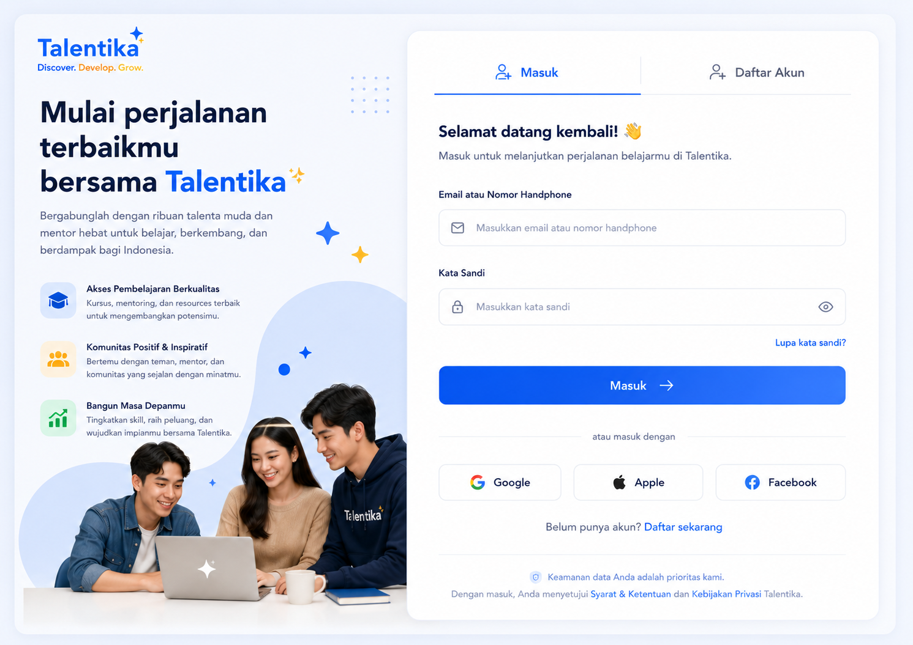

7.1 — Authentication
/auth · /auth/registerLayout
Two‑column split. Left = brand panel (gradient blob illustration + value props + hero copy "Mulai perjalanan terbaikmu bersama Talentika"). Right = card with tab switcher, form, social auth.
Form fields
- Email atau Nomor Handphone (smart input — detects @ vs digits)
- Kata Sandi with eye toggle
- Forgot password link, right-aligned
- Sticky CTA: "Masuk →" full width, blue 600
- OAuth: Google · Apple · Facebook (equal-weight, monochrome)
Value props (left rail)
- Akses Pembelajaran Berkualitas — blue tint icon
- Komunitas Positif & Inspiratif — orange tint icon
- Bangun Masa Depanmu — mint tint icon
Acceptance
- Form validates inline (no full-page reload)
- Footer microcopy links to Syarat & Ketentuan and Kebijakan Privasi
- "Belum punya akun? Daftar sekarang" swaps tab without route change